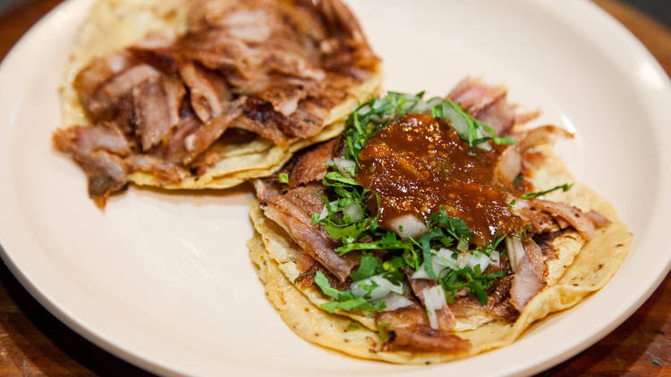

Take it
Cheesy
En "Take it Cheesy", nuestra pasión es compartir la auténtica experiencia culinaria mexicana con nuestros comensales. Inspirados por las vibrantes tradiciones culinarias de México, nos esforzamos por ofrecer platillos tradicionales con un toque moderno. Nuestro equipo de chefs expertos utiliza ingredientes frescos y auténticos métodos de preparación para brindar sabores que transportan a nuestros clientes directamente a las calles de México. Nuestra misión es crear un ambiente acogedor donde cada bocado cuente una historia, donde cada platillo sea una celebración de la rica herencia culinaria de México. En "Take it Cheesy", no solo servimos comida, sino que también compartimos la calidez y la hospitalidad que son tan característicos de la cultura mexicana. Esperamos que cada visita sea una experiencia inolvidable, llena de sabores auténticos y momentos compartidos. ¡Bienvenidos a "Take it Cheesy" y recuerda... Tomalo con calma al probar nuestros ricos sabores!
Email: takeitcheesycontacto@queso.com